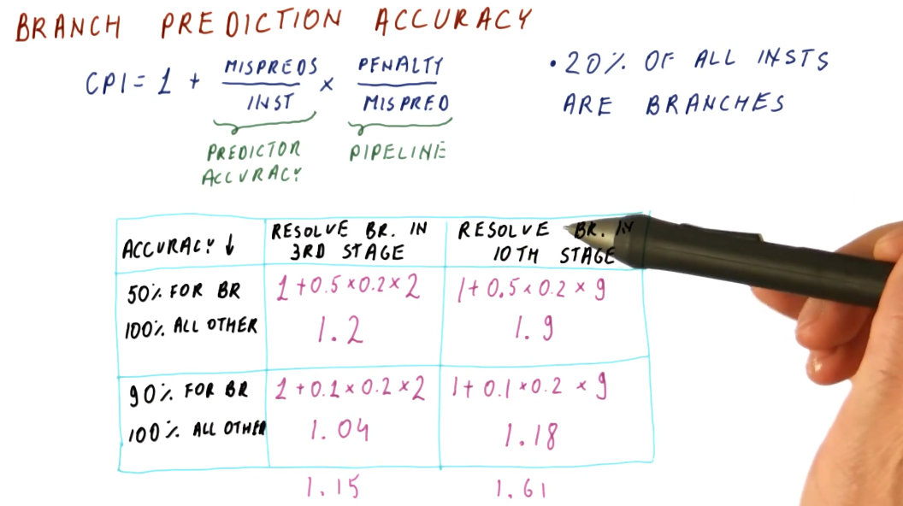
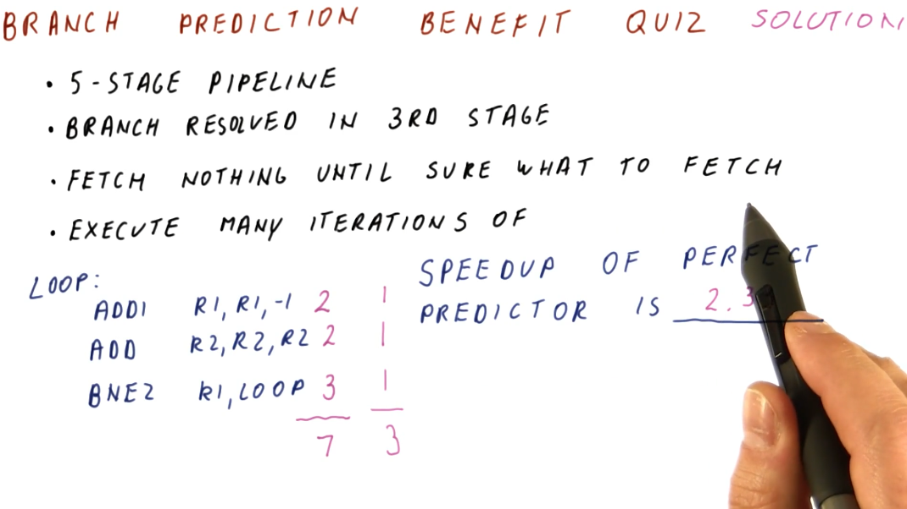
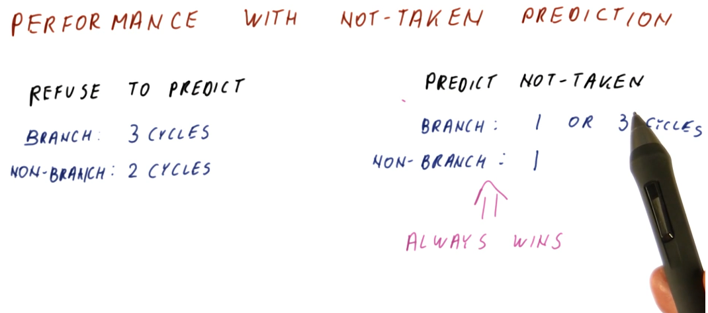
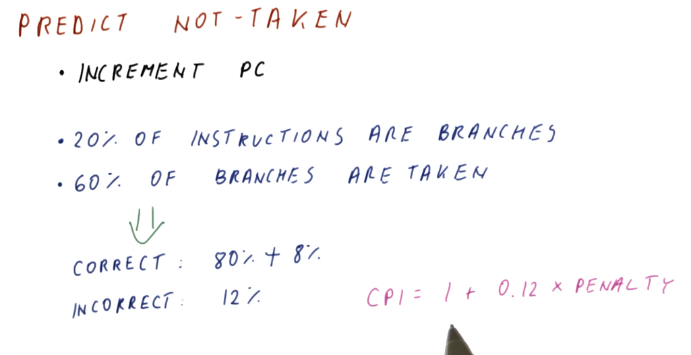
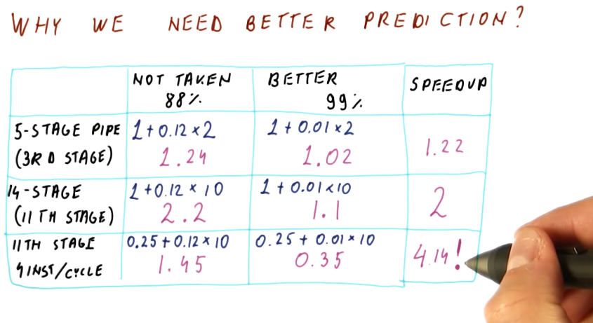

Prediction
Branch prediction requirements
What do we need in order to successfully predict whether a branch will be taken or not? What do need in order to determine where the branch is going if it's taken?
The requirements are as follows:
- Branch prediction needs to work using only the knowledge of where we fetch the
current instruction from.
- We need branch prediction to guess the program counter of the next instruction to fetch.
- With branch prediction we must correctly guess:
- Is this a branch?
- If it is a branch, is it taken?
- If it is a taken branch, what is the target program counter?
Branch prediction accuracy
The image below demonstrates how we can calculate the theoretical CPI of a processor using branch prediction given its branch prediction accuracy, penalty per missed prediction, and percentage of instructions that constitute branches within a benchmark program. The equation is contains these components:
base CPI- in the example below, this is1.predictor accuracy- this is the number of mis-predicted branches per instruction.penalty incurred- the penalty is dictated by the number of stages in a pipeline and when the branch instruction is evaluated.
A more accurate branch predictor increases our performance, decreasing the number of penalties taken for mis-predicted branches, thus decreasing our CPI. The amount of help a better predictor has changes depending upon how long the processor pipeline is. Longer pipelines benefit more from better branch prediction than shorter ones.

Below is branch prediction example problem. The key to this problem is the fact that no branch prediction is being conducted so, until each instruction is decoded, another instruction will not be fetched, thus creating a bubble within the pipeline. So, non-branch instructions will take 2 cycles to execute and branch instructions will take 3 cycles to execute. Instructions will not be fetched after a branch instruction is decoded because the branch instruction still has to be evaluated prior to fetching from the possible branch destination.
In contrast, each instruction for the perfect branch predictor takes 1 instruction, no bubbles exist within the processor pipeline. This is because the branch predictor knows which instruction will be fetched next before the previous one is decoded - including the branches.

Performance with not-taken prediction
A simple implementation of branch prediction that has an increase in performance over just not predicting branches at all is the prediction that all branches are not taken. If no predictions are made, ever, and instructions are only fetched after previous instructions are decoded, branches will always take 3 cycles in our example 5 stage pipeline and regular instructions will take 2 cycles.
If we always assume the branch is not taken, sometimes we'll be right and the branch will only use 1 cycle, while sometimes we'll be wrong and the branch will use 3 cycles - this is still better than making no predictions at all. In this model, regular instructions only take 1 cycle, as well.

Predict not-taken
The predict not-taken predictor is the simplest predictor we can have, all it does is increment the program counter. No extra hardware is required to support the predict not-taken predictor - we should always have the ability to increment the program counter.
A rule of thumb in computer architecture is that 20 percent of all instructions are branches. For branches, about 60 percent of all branches are taken. Thus, the predict not-taken predictor is correct 80 percent of the time (because of non-branch instructions), plus another 8 percent of the time (because of branch instructions). Overall, the predict not-taken predictor is incorrect 12 percent of the time.

Why do we need better prediction?
The image below provides examples for different types of pipelines, showcasing the differences in performance using a predict not-taken predictor and a branch predictor that is correct 99 percent of the time. As you can see, as the processor pipeline gets longer and more complex, conducting more instructions per cycle, branch prediction becomes really important for performance. The ability to accurately predict branches achieves a speedup of 4 for the case of the 14 stage pipeline with 4 instructions per cycle.

Predictor impact quiz
Below is an example quiz that demonstrates how we can determine the impact of a predictor on the CPI of a processor pipeline. Given some metrics about the Pentium 4 processor, we are given a final CPI but not the theoretically ideal CPI of the pipeline. Using the metrics given, we have to derive the ideal CPI and then calculate the new CPI given a different mis-prediction percentage for our predictor.

Why we need better prediction, part 2
The below image displays how wasteful flushing the processor pipeline is when we fail to accurately predict branches. Depending upon how many stages are within a pipeline, while also accounting for the fact that we could execute multiple instructions per cycle, we see that would fetch and flush anywhere from 2, to 10, to 40 instructions - pretty wasteful.

How do we get better prediction?
In a previous section, we discussed the requirements that needed to be met in order to conduct branch prediction. In the image below, the lecture discusses that we don't have the ability to determine if the instruction is a branch, if the instruction is taken, or what the offset of the branch is because we still have yet to fetch the instruction.
What we do know, however, is that, based upon the program counter, we have a historical precedence for what happened at this program counter in the past. We know how the branch at this program counter was behaving in the past - we can use this information because it's pretty common that branches tend to behave the same way each time they are encountered.
We don't know what the current branch instruction to be fetched is going to do, but we can make a prediction based upon its history / the last time it was executed.